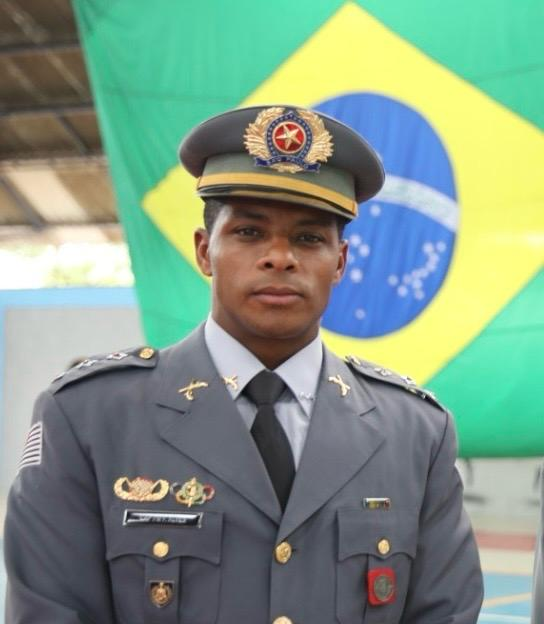

Vagas estão se esgotando rapidamente
Apresentação
A Escola de Educação Física do Exército (EsEFEx) convida aos estudantes e profissionais de Educação Física, bem como de áreas correlatas da saúde e da educação para o seu XII Fórum Científico.
Esse ano o tema norteador do nosso fórum será "Ciência e Tecnologia no Esporte e no Treinamento Militar: Da Inteligência Artificial à Prevenção de Lesões", sendo realizado nos dias 12 e 13 de junho.
Serão dois dias para compartilhar conhecimentos e experiências através de palestras, mesas redondas e apresentações de trabalhos. Estamos contando os dias para esse evento tão rico em trocas de experiências entre professores e estudantes de diversas instituições.
Buscamos contribuir na formação e atuação do Profissional de Educação Física bem como aqueles que atuam em áreas correlatas para a promoção de uma Capacitação Física cada vez mais integrada, segura e eficaz, tanto no âmbito civil, quanto no militar.
Aguardamos vocês no Berço do Ensino Metódico e Racional da Educação Física no Brasil!
Programação
Dia 12 de Junho
Manhã
Credenciamento
Local: Recepção
Abertura
Hino Nacional, Avisos e Boas-vindas ao XII Fórum Científico
Local: Auditório
TC Bottrel - Comandante da EsEFEx
Palestra de Abertura
Inteligência Artificial na Saúde e no Esporte
Local: Auditório
Prof. Dr. Felipe Moura (Universidade Estadual de Londrina)

Moderadora: Prof. Dra. Ângela Neves (EsEFEx)
Intervalo
Local: Foyer
Mesa Redonda - Desempenho Operacional
Local: Auditório
- Lesões musculoesqueléticas em militares: a influência do condicionamento físico
CC Priscila Bunn (CEFAN)
- Deficiência de energia relativa em militares do sexo feminino
Cap Freitas Costa (IPCFEx)
- Preparação física e desempenho do policial militar: uma perspectiva da saúde e operacionalidade do atleta tático
Cap PM Fernando Alves Santa Rosa (EEFPMSP) - Efeitos Biomecânicos do Transporte de Carga em Militares
Cap Fábio Alves Machado Gomes (IPCFEx)
Moderador: Maj Bandeira (IPCFEx)
Temas Livres
Apresentação dos 2 melhores trabalhos da temática "Saúde e capacitação física do combatente"
Local: Auditório
Moderador: Maj Monteiro (EsEFEx)
Almoço


Dia 13 de Junho
Credenciamento
Local: Recepção
Mesa Redonda - Novas fronteiras no esporte e treinamento militar
Local: Auditório
- Tecnologias para aprimoramento do desempenho operacional do militar do futuro
Prof. Dra. Danielli Mello (EsEFEx)
- Análise genética na prevenção de lesão e recuperação muscular e uso de inteligência artificial
Doutoranda Fernanda Oliveira Schmidt (PEB/UFRJ)
- Polimorfismos genéticos no desempenho físico
Prof. Dr. Diego Viana (EEFD/UFRJ)
Moderadora: Prof. Dra. Angela Neves (EsEFEx)
Coffee Break e Exposição de Posteres
Avaliação pela Comissão Científica de Temas Livres
Local: Foyer
Palestra
Avaliação neuromecânica do sistema musculoesquelético
Local: Auditório
Prof. Dra. Liliam Fernandes Oliveira (PEB/UFRJ)

Moderadora: Prof. Dra. Miriam Mainenti
Entrega de Prêmio aos melhores trabalhos
Local: Auditório
Palestra de Encerramento
Aplicação de ferramentas de machine learning na análise biomecânica
Local: Auditório
Prof. Dr. Luciano Luporini Menegaldo (PEB/UFRJ)
Moderadora: Prof. Adriane Muniz (EsEFEx)
Encerramento
Encerramento do XII Fórum Científico
Local: Auditório
TC Bottrel
Prof. Dra. Adriane Muniz
Inscrição
INSCRIÇÕES LIMITADAS!
Vagas estão se esgotando rapidamente
Submissão
Caros Pesquisadores e Profissionais,
É com grande entusiasmo que convidamos vocês a contribuírem com seus trabalhos para o XII Fórum Científico da Escola de Educação Física do Exército. Os trabalhos devem ser enviados em uma das duas linhas de concentração: "Esporte, Exercício e Saúde" e "Saúde e Capacitação Física do Combatente". Não serão aceitos trabalhos incompletos ou projetos.
Esporte, Exercício e Saúde
Esta linha de concentração envolve trabalhos que avaliam os efeitos benéficos do esporte e do exercício na saúde física e mental. Desde a investigação de novas estratégias de treinamento até a aplicação de abordagens inovadoras na reabilitação.
Saúde e Capacitação Física do Combatente
Nesta linha de concentração, buscamos explorar os desafios únicos enfrentados pelos profissionais de segurança e militares em relação à saúde e ao desempenho físico. Dos avanços no treinamento de combate à gestão de lesões e otimização do condicionamento físico em ambientes operacionais.
🚨 Datas importantes:
- Submissão dos resumos: Impreterivelmente até 16 de maio de 2025 às 23:59
- Resultados da seleção dos resumos: 29 de maio de 2025
O autor que apresentará o trabalho deverá estar inscrito no evento, mas a submissão do resumo pode ser feita antes da inscrição.
Lembre-se que o número de inscrições são LIMITADAS!
Os resumos serão submetidos em arquivo .doc ou .docx. O link está ao final da presente seção de orientações.
Orientações para o Resumo:
A formatação do resumo deve obedecer a um padrão (template) específico. Os autores devem baixar o template através do botão para download ao final da presente seção. Os resumos serão submetidos em arquivo .doc ou .docx. O link para upload do arquivo a ser submetido está ao final da presente seção.
- Linhas de concentração: apresente sua escolha entre as duas linhas, no formulário eletrônico de submissão.
- Título: conciso, usar letra maiúscula apenas na primeira letra do título ou quando for o caso.
- Autor(es) e instituição(ões): usar nome completo com numeração correspondente para instituição (seguir exemplo do template, disponibilizado no final da presente seção). Não há número máximo de autores.
- Estrutura do resumo: Os resumos devem ser redigidos na fonte e na disposição do template padrão. Deve ser estruturado, contendo especificamente as seções: Introdução, Objetivo, Métodos, Resultados, Conclusão, Referências Bibliográficas (quando aplicável) e Agradecimentos (quando aplicável).
- Palavras-chave: até 5, conforme DECS (https://decs.bvsalud.org/), separadas por vírgula.
- Referências: não é um item obrigatório, mas caso haja citações, podem ser incluídas até três (03) obras, no estilo Vancouver. Caso não haja, apagar a seção "Referências" do resumo a ser submetido.
- Autor correspondente: colocar o nome completo e o email de contato do autor de correspondência.
Apresentação de Trabalho:
CONDIÇÃO PARA A APRESENTAÇÃO DE TRABALHO: Somente serão apresentados os resumos aprovados pela comissão científica. Para que o resumo seja apresentado e publicado na Revista de Educação Física do Exército, o mesmo deverá ser apresentado no evento. Trabalhos não apresentados durante o evento não serão publicados nos anais do evento.
APRESENTAÇÃO ORAL
Os dois melhores trabalhos de cada linha de concentração serão escolhidos para apresentados oral. A elaboração dos slides é de inteira responsabilidade do autor e/ou coautores. Não há um modelo de apresentação, porém a mesma deverá conter as mesmas seções do resumo (Contextualização, objetivo, material e métodos, resultados e conclusões) e a logo do evento deverá aparecer em todos os slides.
PÔSTER
A elaboração e confecção do banner para a apresentação sob a forma de pôster é de inteira responsabilidade do autor e coautores. A apresentação gráfica do pôster deverá ser na forma de painéis, não ultrapassando o limite de 120 cm (altura) por 90 cm (largura), devendo, pelo menos, um dos autores (devidamente inscrito) permanecer no local de exposição do trabalho durante o horário de apresentação conforme programação.
A informação nele contida deve ser legível a uma distância de, aproximadamente, 1,5 metros, de modo a permitir uma leitura fácil. Devem apresentar os principais aspectos da pesquisa, estando de acordo com o resumo submetido e estruturado da seguinte forma:
- Na parte superior conter: título, nomes de todos os autores, afiliação institucional e LOGO DO EVENTO.
- Recomenda-se o uso mínimo de texto e máximo de esquemas, figuras e tabelas.
- Organizar as informações de modo sequencial: Introdução, Objetivo, Métodos, Resultados, Conclusão, Referências Bibliográficas (quando aplicável) e Agradecimentos (quando aplicável).
Palestrantes
Prof. Dr. Felipe Moura
Professor Associado no Departamento de Ciências do Esporte – Universidade Estadual de Londrina (UEL)
Dados Pessoais
Nome: Felipe Moura
Titulação: Professor Doutor
Cargo: Professor Associado – Universidade Estadual de Londrina (UEL)
Localidade: Londrina, PR – Brasil
Formação Acadêmica
- Graduação em Bacharelado em Educação Física – Universidade Estadual Paulista Júlio de Mesquita Filho (UNESP), 2003
- Mestrado em Ciências da Motricidade – UNESP, 2006
- Doutorado em Educação Física – Universidade Estadual de Campinas (UNICAMP)
- Pós-Doutorado em Inteligência Artificial – Wageningen University & Research, Holanda
Atuação Acadêmica
- Professor Associado no Departamento de Ciências do Esporte – Universidade Estadual de Londrina (UEL)
- Orientador de Mestrado e Doutorado no Programa de Pós-graduação Associado em Educação Física UEM/UEL
- Orientador no Programa de Pós-graduação em Ciências da Reabilitação
- Bolsista de Produtividade em Pesquisa do CNPq
Experiência e Linhas de Pesquisa
- Biomecânica aplicada ao esporte e ao exercício
- Desenvolvimento de tecnologias para Saúde e Esporte
- Modelagem matemática e computação aplicada ao esporte
- Processamento de sinais biológicos
- Inteligência Artificial aplicada à ciência de dados em biodinâmica
Atuação Institucional
- Ex-membro do corpo diretivo da Sociedade Brasileira de Biomecânica (2019–2021)
Produção Científica
- Autor de publicações em periódicos nacionais e internacionais
- Participação em projetos interdisciplinares voltados à inovação tecnológica em desempenho humano, saúde e esporte

Prof. Dr. Paulo Lucarelli
Professor e Pesquisador no Departamento de Ciências da Reabilitação da Universidade Nove de Julho (UNINOVE)
Dados Pessoais
Nome: Paulo Roberto Garcia Lucareli
Formação: Fisioterapeuta
Localidade: São Paulo, SP – Brasil
Formação Acadêmica
- Graduação em Fisioterapia – Universidade de Marília (UNIMAR)
- Mestrado em Ciências – Faculdade de Medicina da Universidade de São Paulo (USP)
- Doutorado em Ciências – Faculdade de Medicina da Universidade de São Paulo (USP)
Atuação Profissional
- Professor e Pesquisador no Departamento de Ciências da Reabilitação da Universidade Nove de Julho (UNINOVE)
- Orientador de dissertações de mestrado e teses de doutorado na área de análise de marcha e movimento
- Ex-fisioterapeuta do Laboratório de Estudos do Movimento do Hospital Israelita Albert Einstein
Áreas de Interesse
- Reabilitação
- Biomecânica
- Análise da Marcha e do Movimento Humano
- Protocolos de Avaliação Funcional
Publicações
Mais de 150 artigos científicos publicados em periódicos internacionais revisados por pares
Premiações e Reconhecimentos
- First Prize – Oral Presentation no 47º Encontro Científico Anual da International Spinal Cord Society
- JOSPT Excellence in Research Award – Journal of Orthopaedic & Sports Physical Therapy
- Best Poster Award – ESMAC 2024, Oslo, pela European Society for Movement Analysis in Adults and Children
Atuação em Sociedades Científicas
- Presidente da Sociedade Brasileira de Análise Clínica da Marcha e do Movimento Humano (SBACMMH) – Gestão 2024-2026
- Membro da Comissão Científica da Sociedade Brasileira de Biomecânica (SBB)
- Membro Ativo da European Society for Movement Analysis in Adults and Children (ESMAC)

Profa. Dra. Liliam Fernandes
Professora Emérita da UFRJ
Dados Pessoais
Nome: Liliam Fernandes Oliveira
Título: Professora Emérita
Instituição: Universidade Federal do Rio de Janeiro (UFRJ)
Localidade: Rio de Janeiro, RJ – Brasil
Titulações e Bolsas
- Professora Emérita da UFRJ
- Cientista do Nosso Estado – FAPERJ
- Pesquisadora PQ – CNPq
- Docente Permanente do Programa de Pós-Graduação em Engenharia Biomédica (PEB/COPPE/UFRJ)
- Vice-Coordenadora do Curso Lato Sensu em Biomecânica – EEFD/UFRJ
Formação Acadêmica
- Pós-Doutorado – Instituto Militar de Engenharia (IME/RJ, 2008)
- Pós-Doutorado – Laboratorio di Ingegneria del Sistema Muscolare, Politecnico di Torino, Itália (2008)
- Doutorado em Engenharia Biomédica – PEB/COPPE/UFRJ (1996)
- Mestrado em Educação Física – Biociências – UFRJ (1987)
- Graduação em Fisioterapia – Instituto Brasileiro de Medicina de Reabilitação (1992)
- Graduação em Educação Física – UFRJ (1981)
Atuação Profissional e Científica
- Professora e pesquisadora no Laboratório de Biomecânica – PEB/COPPE/UFRJ
- Experiência consolidada em Engenharia Biomédica aplicada à Educação Física e Fisioterapia, com foco em biomecânica muscular
Pesquisas em Desenvolvimento
- Propriedades mecânicas da unidade músculo-tendínea
- Respostas adaptativas ao alongamento e ao condicionamento muscular
- Uso de ultrassonografia e elastografia dinâmica
- Eletromiografia de alta densidade para análise da ativação muscular regional
- Alterações da rigidez músculo-tendínea associadas ao treinamento e reabilitação
Áreas de Interesse
- Biomecânica muscular
- Engenharia biomédica aplicada ao movimento humano
- Fisiologia do exercício e reabilitação musculoesquelética
- Tecnologias de avaliação músculo-tendínea

Prof. Dr. Diego Viana
Professor Adjunto da Universidade Federal do Rio de Janeiro
Dados Pessoais
Nome: Diego Viana
Titulação: Professor Doutor
Cargo: Professor Adjunto da Universidade Federal do Rio de Janeiro (UFRJ)
Localidade: Rio de Janeiro, RJ – Brasil
Formação Acadêmica
- Graduação em Educação Física – Universidade Federal do Rio de Janeiro (UFRJ)
- Especialização em Treinamento Desportivo – UFRJ
- Mestrado em Educação Física – Escola de Educação Física, UFRJ
- Doutorado em Ciências (Endocrinologia) – Faculdade de Medicina, UFRJ
- Pós-Doutorado – Instituto de Nutrição Josué de Castro, UFRJ
Atuação Acadêmica
- Professor Adjunto da Universidade Federal do Rio de Janeiro (UFRJ)
- Pesquisador Permanente do Programa de Pós-Graduação em Educação Física – UFRJ
- Pesquisador Permanente do Programa de Pós-Graduação em Ciências da Reabilitação – UFRJ
Áreas de Pesquisa
- Bioquímica do Exercício
- Fisiologia do Desempenho Físico
- Emagrecimento e Metabolismo
- Intervenções Físicas e Nutricionais para Saúde e Performance
Produção Científica e Atuação Editorial
- Editor-Chefe do Jornal de Investigação Médica
- Autor de publicações científicas em periódicos nacionais e internacionais
- Participação em projetos interdisciplinares com foco em saúde, reabilitação e desempenho esportivo
Prof. Dr. Luciano Luporini Menegaldo
Professor Titular do Programa de Engenharia Biomédica – COPPE/UFRJ
Dados Pessoais
Nome: Luciano Luporini Menegaldo
Título: Professor Titular
Instituição: Programa de Engenharia Biomédica – COPPE/UFRJ
Localidade: Rio de Janeiro, RJ – Brasil
Titulações e Bolsas
- Professor Titular do Programa de Engenharia Biomédica – COPPE/UFRJ
- Vice-Coordenador do PPG em Engenharia Biomédica – COPPE/UFRJ
- Coordenador do Laboratório de Biomecânica – COPPE/UFRJ
- Docente Permanente dos PPGs em Engenharia Biomédica (COPPE) e Ciências da Reabilitação (Faculdade de Medicina/UFRJ)
- Docente da Graduação em Engenharia Mecânica (Escola Politécnica – UFRJ)
- Cientista do Nosso Estado – FAPERJ
- Bolsista de Produtividade em Pesquisa CNPq – Nível 1D
Formação Acadêmica
- Pós-Doutorado – Università degli Studi Roma Tre, Itália (2008)
- Doutorado em Engenharia Mecânica – Universidade de São Paulo – USP (2001)
- Mestrado em Engenharia Mecânica – Universidade Estadual de Campinas – UNICAMP (1997)
- Graduação em Engenharia Mecânica – UNICAMP (1994)
Atuação Profissional
- Ex-professor da Seção de Engenharia Mecânica e de Materiais do Instituto Militar de Engenharia (IME) – 2004 a 2011
- Coordenador do PPG em Engenharia Mecânica (IME) – 2007 a 2010
- Pesquisador do Instituto de Pesquisas Tecnológicas de São Paulo (IPT) como bolsista CNPq – 2001 a 2003
- Coordenador do PPG em Engenharia Biomédica da COPPE/UFRJ – 2019 a 2023
Áreas de Atuação
- Biomecânica
- Dinâmica de sistemas mecânicos e biológicos
- Modelagem computacional
- Controle de movimento humano
Áreas de Interesse Científico
- Engenharia aplicada ao movimento humano
- Simulação e controle de sistemas músculo-esqueléticos
- Desenvolvimento de tecnologias para reabilitação

Prof. Dr. Orlando Folhes
Doutor em Treinamento Desportivo
Dados Pessoais
Nome: Orlando Folhes
Título: Doutor em Treinamento Desportivo
Área de Atuação: Fisiologia do Exercício, Treinamento Desportivo, Esportes de Combate
Localidade: Brasil
Formação Acadêmica
- Doutorado em Treinamento Desportivo – Universidade Internacional do Brasil (Unib), Portugal
- Mestrado em Ciência do Desporto – Universidade de Trás-os-Montes e Alto Douro (UTAD), Portugal
- Especialização em Fisiologia do Exercício – Famath, Brasil
- Especialização em Metodologia Científica do Treinamento Desportivo – Universidade de Matanzas, Cuba
- Licenciatura Plena em Educação Física – Universidade Estácio de Sá (UNESA), Brasil
Atuação Profissional
- Preparador físico de atletas profissionais de esportes de combate, como MMA e Wrestling
- Experiência prática e científica na periodização e controle de carga em esportes de alto rendimento
- Consultor técnico em preparação física para atletas de elite
Publicações
- Autor do livro: Preparação Física para o MMA – Periodização
Áreas de Interesse
- Treinamento de força e potência em esportes de combate
- Periodização do treinamento para atletas de alto rendimento
- Aplicações da fisiologia do exercício em contextos competitivos extremos

Cap Freitas Costa
Pesquisador da Seção de Apoio à Operacionalidade do IPCFEx
Dados Pessoais
Nome: Freitas Costa
Patente: Capitão
Titulação: Mestre e Doutorando
Instituição de Atuação: Instituto de Pesquisa da Capacitação Física do Exército (IPCFEX) – Seção de Apoio à Operacionalidade
Localidade: Rio de Janeiro, RJ – Brasil
Formação Acadêmica
- Doutorando em Estudos da Motricidade Humana – Escola de Educação Física e Desportos (EEFD/UFRJ)
- Mestrado em Ciências Aplicadas ao Sistema Musculoesquelético – Instituto Nacional de Traumatologia e Ortopedia (INTO)
- Especialização em Ortopedia-Traumatologia
- Especialização em Medicina do Exercício e do Esporte
Atuação Profissional
- Pesquisador da Seção de Apoio à Operacionalidade do IPCFEX – Instituto de Pesquisa da Capacitação Física do Exército
- Contribui com estudos voltados ao desempenho físico, reabilitação e prevenção de lesões em militares
- Desenvolvimento de estratégias aplicadas à capacitação física e operacionalidade militar
Associações e Titulações
- Membro Titular da Sociedade Brasileira de Medicina do Esporte e do Exercício (SBMEE)
Áreas de Atuação e Pesquisa
- Sistema musculoesquelético
- Ortopedia e traumatologia aplicada ao exercício
- Medicina esportiva e do exercício em contextos militares
- Capacitação física e desempenho operacional
Cap Fábio Alves Machado Gomes
Adjunto da Divisão de Pesquisa e Chefe do Laboratório de Biomecânica do IPCFEx
Dados Pessoais
Nome: Capitão Fabio Alves Machado Gomes
Instituição: Instituto de Pesquisa da Capacitação Física do Exército (IPCFEx)
Formação Acadêmica
- Graduação em Educação Física – Escola de Educação Física do Exército (EsEFEx)
- Graduação em Fisioterapia – Universidade Gama Filho (UGF)
- Especialização em Anatomia Humana e Biomecânica – Universidade Castelo Branco
- Mestrado em Morfologia – Universidade do Estado do Rio de Janeiro (UERJ)
- Doutorado em Ciências do Desporto – Universidade de Trás-os-Montes e Alto Douro (UTAD), Portugal
Atuação Profissional
- Adjunto da Divisão de Pesquisa e Chefe do Laboratório de Biomecânica do Instituto de Pesquisa da Capacitação Física do Exército (IPCFEx)
- Introduziu no Brasil o Dynamic Movement Assessment Method (DMA), desenvolvido na Accelerated Conditioning and Learning – EUA
- Fisioterapeuta da equipe de vela do Brasil no Ciclo Olímpico de Pequim
- Fisioterapeuta dos atletas da equipe de vela do Iate Clube do Rio de Janeiro durante os Jogos Pan-Americanos Rio 2007
- Preparador físico e fisioterapeuta de diversos atletas da vela em campanhas olímpicas
Atuação Acadêmica e Científica
Revisor (peer reviewer) dos periódicos:
- Gait and Posture (Holanda)
- European Journal of Human Movement (Espanha)
- Kinesiology (Croácia)
- Revista de Educação Física (Brasil)
- Revista Agulhas Negras (Brasil)
Major Aviador Willian Carrero Botta
Chefe da Seção de Pesquisa e Desenvolvimento do Centro de Medicina Aeroespacial (CEMAL) da Força Aérea Brasileira
Dados Biográficos
Nome: Willian Carrero Botta
Posto: Major
Especialidade: Aviador
Local de Nascimento: São Carlos – SP
Data de Nascimento: 09/09/1987
Formação Acadêmica
- Bacharelado em Administração Pública – Academia da Força Aérea (AFA)
- Bacharelado em Ciências Aeronáuticas – Academia da Força Aérea (AFA)
- Bacharelado em Educação Física – UNICESUMAR
- Mestrado em Desempenho Humano Operacional – Universidade da Força Aérea (UNIFA)
- Doutorado em Educação Física – Universidade Estadual de Campinas (UNICAMP)
- Pós-Doutorado em andamento – Universidade Estadual de Campinas (UNICAMP)
- Curso de Aperfeiçoamento de Oficiais – EAOAR
Cursos Operacionais
- Curso de Tática Aérea – Grupo de Instrução Tática e Especializada (GITE)
- Curso de Especialização Operacional em Asas Rotativas – CEOAR
- Curso de Capacitação em Socorro Pré-Hospitalar Militar – BANT
- Curso de Busca e Salvamento (SAR) – PARASAR
Atuação Profissional
- Chefe da Seção de Pesquisa e Desenvolvimento do Centro de Medicina Aeroespacial (CEMAL) da Força Aérea Brasileira
- Pesquisador em Desempenho Humano Operacional
- Especialista em Treinamento Físico Militar

Profa. Dra. Danielli Mello
Professora Titular da Escola de Educação Física do Exército (EsEFEx)
Dados Pessoais
Nome: Danielli Mello
Titulação: Professora Doutora
Profissão: Profissional de Educação Física / Pesquisadora
Localidade: Rio de Janeiro, RJ – Brasil
Formação Acadêmica
- Graduação em Educação Física – Universidade Federal do Rio de Janeiro (UFRJ), 1998
- Doutorado em Saúde Pública – Fundação Oswaldo Cruz (FIOCRUZ), 2008
- Pós-Doutorado em Fisiologia em Ambientes Extremos – University of Portsmouth, Reino Unido, 2016
- Pós-Doutorado em Termografia Aplicada ao Esporte – Universidad Politécnica de Madrid, Espanha, 2019
Atuação Acadêmica e Profissional
- Professora Titular da Escola de Educação Física do Exército (EsEFEx)
- Docente Permanente do Programa de Pós-graduação Stricto Sensu em Desempenho Humano e Operacional – Universidade da Força Aérea (UNIFA)
- Professora Colaboradora do Programa de Pós-graduação em Ciências do Exercício e do Esporte – Universidade do Estado do Rio de Janeiro (UERJ)
- Docente da CBF Academy – Curso de Treinador Licença A e B
- Editora-Chefe Adjunta da Revista de Educação Física
Atuação em Pesquisa e Consultoria
- Pesquisadora Colaboradora da Comissão de Desporto do Exército (CDE) – Avaliação de equipes de pentatlo militar, triatlo, atletismo, tiro esportivo e futebol
- Pesquisadora Colaboradora da equipe de Voleibol Feminino SESC Flamengo
- Diretora do Departamento de Educação e Prevenção da SOBRASA – Sociedade Brasileira de Salvamento Aquático
Obras Publicadas
- Autora do livro: "Ciclismo Indoor: Bases Científicas e Metodológicas"
- Autora e organizadora do livro: "Ciência Aplicada ao Exercício Físico e ao Esporte"
Experiência e Linhas de Pesquisa
- Fisiologia do Exercício
- Fisiologia em Ambientes Extremos
- Termografia Infravermelha
- Tecnologia no Esporte
- Estresse Térmico em atletas táticos e atletas de alto rendimento
Palestras e Reconhecimento
Palestrante em eventos científicos nacionais e internacionais, com destaque por sua atuação interdisciplinar entre ciência, treinamento esportivo e inovação tecnológica aplicada ao desempenho humano.

Prof. Dr. Gabriel Zeitoune
Idealizador do Método CCD – Treino de Força Baseado nas Fases da Corrida
Dados Pessoais
Nome: Gabriel Zeitoune
Profissão: Profissional de Educação Física
Localidade: Rio de Janeiro, RJ – Brasil
Formação Acadêmica
- Graduação em Educação Física – Universidade do Estado do Rio de Janeiro (UERJ)
- Mestrado em Engenharia Biomédica – COPPE / Universidade Federal do Rio de Janeiro (UFRJ)
- Doutorado em Engenharia Biomédica – COPPE / Universidade Federal do Rio de Janeiro (UFRJ)
Ênfase em Biomecânica da Corrida e Prevenção de Lesões
Atuação Profissional
- Especialista em prescrição de treino de força para corredores, com mais de 12 anos de experiência
- Consultor de treinadores em todo o Brasil, com foco em ciência aplicada à prática esportiva
- Referência nacional em avaliação biomecânica de baixo custo
Método Proprietário
Idealizador do Método CCD – Treino de Força Baseado nas Fases da Corrida
- Integra avaliação biomecânica, controle de carga e periodização específica
- Focado em ganhos de performance e prevenção de lesões para atletas amadores e profissionais
Diferenciais Profissionais
- Combina embasamento científico sólido com aplicação prática clara
- Abordagem centrada na clareza metodológica, eficiência do treino e resultados mensuráveis
- Impacto direto no desenvolvimento de treinadores e atletas em todo o país
Áreas de Especialização
- Biomecânica da Corrida
- Prevenção de Lesões em Corredores
- Treinamento de Força Específico para Corrida
- Avaliação Funcional e Controle de Carga
CC Priscila Bunn
Encarregada da Divisão de Pesquisa e do ensino de pós-graduação do Centro de Educação Física Almirante Adalberto Nunes (CEFAN)
Formação Acadêmica
- Doutorado em Ciências do Exercício e do Esporte – Universidade do Estado do Rio de Janeiro (UERJ)
- Mestrado em Engenharia Biomédica – Universidade Federal do Rio de Janeiro (UFRJ)
- Graduação em Fisioterapia – Universidade Federal do Rio de Janeiro (UFRJ)
Atuação Profissional
- Encarregada da Divisão de Pesquisa e do ensino de pós-graduação do Centro de Educação Física Almirante Adalberto Nunes (CEFAN)
- Pesquisadora do programa Jovem Cientista do Nosso Estado – FAPERJ (desde 2024)

Doutoranda Fernanda Oliveira Schmidt
Doutoranda em Engenharia Biomédica pela COPPE/UFRJ
Dados Pessoais
Nome: Fernanda Oliveira Schmidt
Titulação: Doutoranda em Engenharia Biomédica
Instituição: COPPE/UFRJ – Instituto Alberto Luiz Coimbra de Pós-Graduação e Pesquisa em Engenharia
Localidade: Rio de Janeiro, RJ – Brasil
Formação Acadêmica
- Doutorado em Engenharia Biomédica (em andamento) – COPPE/UFRJ (desde 2023)
- Mestrado em Engenharia Biomédica – COPPE/UFRJ (2023)
- Graduação em Biomedicina – Universidade Federal do Rio de Janeiro (UFRJ), com ênfase em Biociência Legal (2022)
- MBA em Big Data – Centro Universitário União das Américas (2023)
- Pós-graduação em Análise de Dados – Centro Universitário União das Américas (2022)
Atuação Acadêmica e Científica
- Pesquisadora nos Laboratórios de Biomecânica e de Engenharia de Sistemas de Saúde da COPPE/UFRJ
- Integra projetos que investigam a relação entre variáveis genéticas e a recuperação muscular pós-exercício, com foco em biomecânica, genética e inteligência artificial
- Participou do Laboratório de Arqueologia e Antropologia Forense do Museu Nacional/UFRJ, com estudos sobre lesões ósseas e perfil biológico
- Atuação no Laboratório de Neurodesenvolvimento e Neurodegeneração do Instituto de Ciências Biomédicas/UFRJ, estudando reparo de DNA em condições patológicas
Áreas de Interesse e Pesquisa
- Biomecânica aplicada à reabilitação
- Inteligência Artificial e machine learning aplicados à saúde
- Genética e predição de recuperação muscular
- Modelagens computacionais para análise biomecânica
- Sistemas inteligentes em reabilitação e esporte
Cap PM Fernando Alves Santa Rosa
Chefe da Seção de Planejamento da Escola de Educação Física da Polícia Militar do Estado de São Paulo
Formação Acadêmica
- Doutorado em Ciências da Reabilitação – Universidade Nove de Julho
- Mestrado em Ciências da Reabilitação – Universidade Nove de Julho
- Especialização em Fisiologia do Exercício e Bioquímica
- Graduação em Educação Física – Escola de Educação Física da Polícia Militar do Estado de São Paulo
- Graduação em Ciências Policiais de Segurança e Ordem Pública – Academia de Polícia Militar do Barro Branco
Atuação Profissional
- Professor e Chefe da Seção de Planejamento da Escola de Educação Física da Polícia Militar do Estado de São Paulo
- Professor da Faculdade Estácio de Carapicuíba
- Professor do Centro de Altos Estudos em Segurança Pública (CAES)
Profa. Dra. Jerusa Lara
Biomecânica do Esporte de Alto Rendimento do Sesi-SP
Formação Acadêmica
- Doutorado em Educação Física – Universidade Estadual de Campinas (2016)
- Doutorado-Sanduíche em Educação Física – Universidade de Lisboa (2015)
- Mestrado em Educação Física – Universidade Estadual de Campinas (2011)
- Graduação em Educação Física – Centro Universitário Claretiano de Batatais (2014)
- Graduação em Física – Universidade Estadual de Campinas (2006)
Atuação Profissional
- Biomecânica do Esporte de Alto Rendimento – Sesi-SP
- Gestora de Programa de Detecção de Talentos e Iniciação Científica Júnior – Gerência de Esporte e Lazer do Sesi-SP
- Professora – Universidade Federal do Paraná (2017–2019)
- Pós-Doutorado – Universidade Federal do Paraná (Programa de Atividade Física e Saúde)
Patrocinadores
Entre em Contato
Para mais informações, entre em contato conosco através do email labio.esefex@gmail.com ou preencha o formulário abaixo: